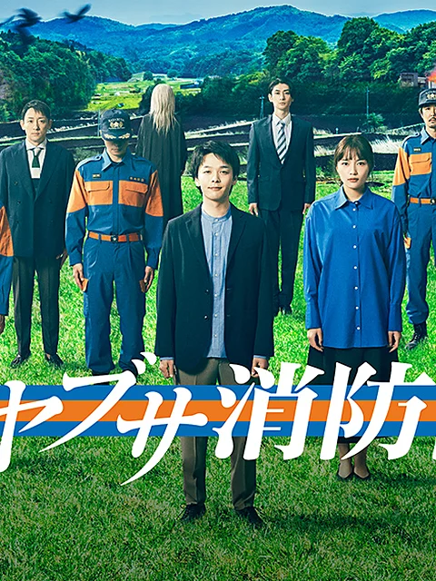

ドラマ一覧
国内ドラマ12作品
見放題
大豆田とわ子と三人の元夫
★4.4（65,219件）
国内ドラマ・2021年・全10話
くわしく見る ›
見放題
おいハンサム!!
★4.2（14,598件）
国内ドラマ・2022年・全8話
くわしく見る ›
見放題
勇者ヨシヒコと魔王の城
★4.2（20,822件）
国内ドラマ・2011年・全12話
くわしく見る ›
見放題
おっさんずラブ（2018）
★4.1（35,230件）
国内ドラマ・2018年・全7話
くわしく見る ›
見放題
時効警察
★4.1（9,579件）
国内ドラマ・2006年・全9話
くわしく見る ›
見放題
結婚できない男
★4.1（23,388件）
国内ドラマ・2006年・全12話
くわしく見る ›
見放題

ハヤブサ消防団
★3.8（13,233件）
国内ドラマ・2023年・全9話
くわしく見る ›
見放題
孤独のグルメ Season11
★3.7（650件）
国内ドラマ・2026年・全12話
くわしく見る ›
見放題
リーガルV～元弁護士・小鳥遊翔子～
★3.6（3,373件）
国内ドラマ・2018年・全9話
くわしく見る ›
見放題
警視庁アウトサイダー
★3.4（2,813件）
国内ドラマ・2023年・全9話
くわしく見る ›
見放題
ドクターX～外科医・大門未知子～
★4.1（10,846件）
国内ドラマ・2012年・全8話(第1シーズン)
くわしく見る ›
見放題
南くんが恋人！？
★3.1（1,476件）
国内ドラマ・2024年・全8話
くわしく見る ›
韓国ドラマ8作品
見放題
哲仁王后～俺がクイーン！？～
★4.2（6,317件）
韓国ドラマ・2021年・全20話
くわしく見る ›
見放題
ホテルデルーナ
★4.1（11,248件）
韓国ドラマ・2019年・全24話(U-NEXT表記。韓国放送は全16話)
くわしく見る ›
見放題
財閥家の末息子～Reborn Rich～
★4.2（11,812件）
韓国ドラマ・2022年・全16話
くわしく見る ›
見放題
太陽の末裔 Love Under The Sun
★4.4（33,014件）
韓国ドラマ・2016年・全24話
くわしく見る ›
見放題
女神降臨
★4.2（18,768件）
韓国ドラマ・2020年・全26話
くわしく見る ›
見放題
赤い袖先
★4.0（4,527件）
韓国ドラマ・2021年・全36話
くわしく見る ›
見放題
ソンジェ背負って走れ
★4.4（14,512件）
韓国ドラマ・2024年・全16話
くわしく見る ›
見放題
瑞草洞＜ソチョドン＞
★4.0（2,356件）
韓国ドラマ・2025年・全12話
くわしく見る ›
海外ドラマ6作品
見放題
ジ・オファー / ゴッドファーザーに賭けた男
★4.4（1,635件）
海外ドラマ・2022年・全10話
くわしく見る ›
見放題
ウォーキング・デッド シーズン1
★4.2（30,855件）
海外ドラマ・2010年・シーズン1
くわしく見る ›
見放題
名探偵モンク シーズン１
★4.3（922件）
海外ドラマ・2002年・全13話
くわしく見る ›
見放題
CSI：科学捜査班 シーズン1
★4.0（1,477件）
海外ドラマ・2000年・シーズン1
くわしく見る ›
見放題
S.W.A.T. シーズン1
★4.0（1,877件）
海外ドラマ・2017年・シーズン1
くわしく見る ›
見放題
イエロージャケッツ シーズン１
★3.8（929件）
海外ドラマ・2021年・全10話
くわしく見る ›
本ページの情報は2026年11月24日時点のものです。最新の配信状況はU-NEXTサイトにてご確認ください。配信状況は2026年11月24日にU-NEXTの公式サービスサイトで確認しました。配信は入れ替わるため、申し込む前に公式サイトで確認してください。